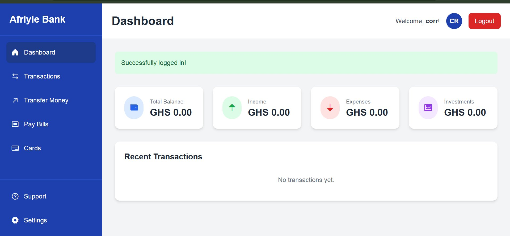
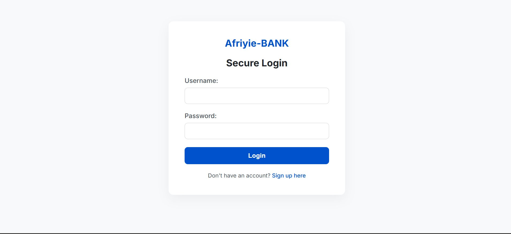
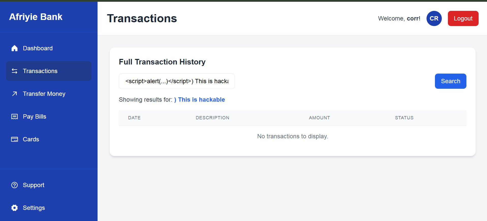
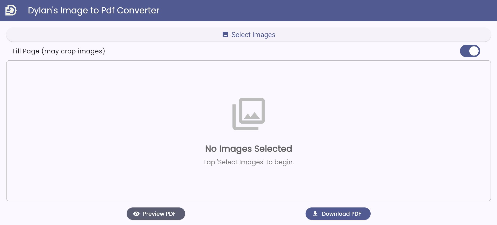
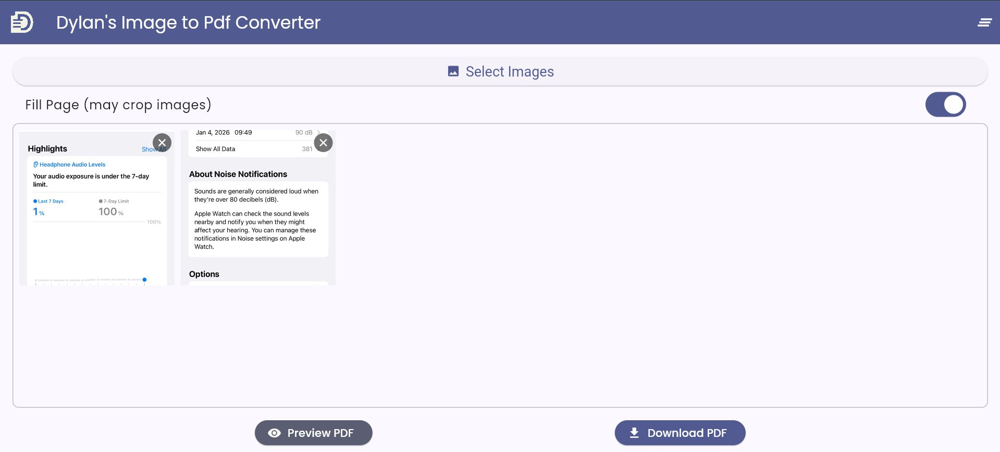

Projects built specifically to practise vulnerability discovery, exploitation, and remediation in controlled environments. Each lab documents real findings with reproducible proof-of-concept steps.
A deliberately vulnerable banking web application prototyped as a penetration testing target. Simulates real-world financial application attack surfaces including authentication flows, session management, transaction handling, and input validation weaknesses.



A cross-platform image-to-PDF application built with Flutter/Dart and a Python prototype. The project served as a controlled lab for practising full-cycle application security auditing: build, test, break, fix, document.

